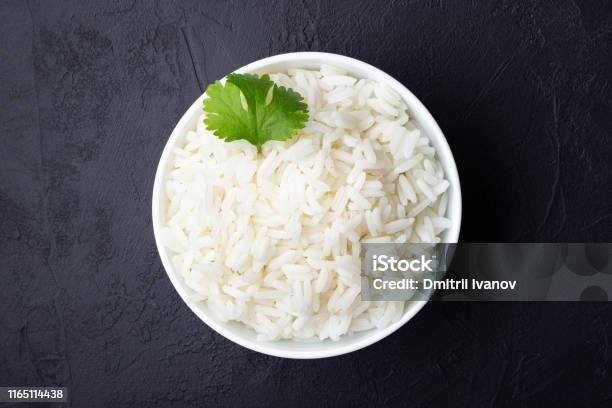

Home
Rice

A bowl of boiled rice recipe
Fluffy, tender rice cooked by simmering rinsed grains in water until soft and perfectly steamed.
Ingredients
- T1 cup white rice
- 2 cups water
- 1 tablespoon oil or butter
- T1/2 teaspoon salt
Steps
- Rinse 1 cup rice until water runs clear.
- Heat 1 tbsp oil or butter in a pot.
- Add rice, stir for 1 minute.
- Pour in 2 cups water and a pinch of salt.
- Bring to boil, then cover and simmer on low for 15–18 mins.
- Remove from heat, let sit 5 mins (covered).
- Fluff with a fork and serve.